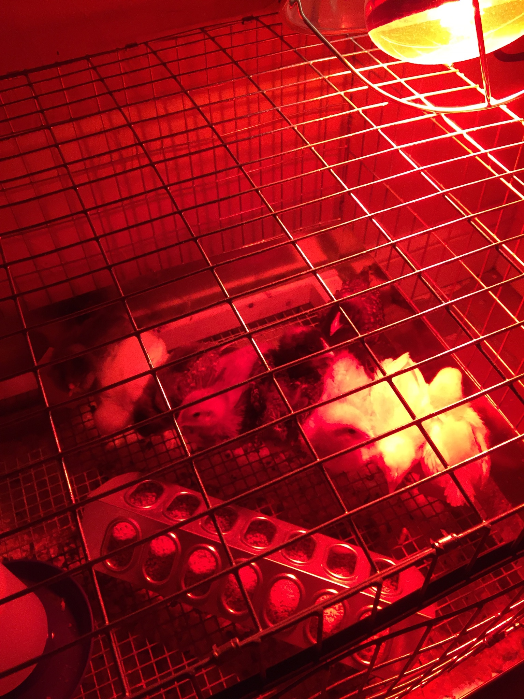

About Me
Hey, it's Keenan, and no matter how many times I do these introductions, I never know what exactly to write. I'm originally from North Hampton, New Hampshire, and am at NEIT to study Software Engineering and Web Development. I don't do much for hobbies, usually programming and gaming. Whenever I play games, it's either factory building games (i.e. Satisfactory or Factorio, which I'm playing right now), Souls-like (i.e. Elden Ring, Bloodborne, Dark Souls 3), or RPGs (i.e. Path of Exile and Path of Exile 2).
Picture of chickens I used to own.
My Schools
- Windham High School
- Davenport High School
- Winnacunnet High School (graduated here)
I moved twice during high school.
Hobbies
- Programming
- Video Games
- Sometimes Photoshop

Part of a Satisfactory save I have.